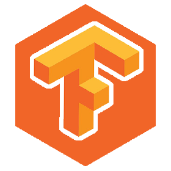

TensorFlow.js, an open-source JavaScript library, was first introduced by Google in March 2018. It was designed to bring the power of TensorFlow, a popular deep learning framework, to the web browser and Node.js environments. Over the last 10 years from its inception, TensorFlow.js has undergone significant transformations, empowering developers and researchers to build machine learning applications directly in the browser or server-side with JavaScript.
TensorFlow.js originated from the TensorFlow project, which was initially developed as a Python-based framework in Google's Brain team. TensorFlow gained immense popularity due to its flexibility and scalability in building deep learning models. However, JavaScript developers had limited access to machine learning libraries for their browser-based applications.
In the early stages, there were attempts by the community to create JavaScript bindings for TensorFlow. However, TensorFlow.js officially emerged in March 2018, providing a full-fledged JavaScript library with its own unique APIs optimized for the web and Node.js environments.
TensorFlow.js enabled the execution of machine learning models directly on the client-side, meaning the models could run directly in the web browser without needing any server interaction. This capability opened up various possibilities for interactive and real-time machine learning applications that could be distributed through web browsers without significant backend infrastructure.
With advancements in transfer learning techniques, TensorFlow.js allowed developers to utilize pre-trained models for various tasks like image recognition, natural language processing, and more. This facilitated faster model development by leveraging existing state-of-the-art models and fine-tuning them for specific use cases.
TensorFlow.js garnered a growing community of developers and researchers who contributed to its growth. More and more educational resources, tutorials, and documentation became available, helping newcomers get started with machine learning in JavaScript.
Beyond the core library, TensorFlow.js expanded its ecosystem by introducing other specialized libraries. For example, 'tfjs-data' for data handling, 'tfjs-vis' for data visualization, and 'tfjs-converter' for model conversion between different formats. This modularity allowed users to pick and choose components based on their specific needs.
As time passed, TensorFlow.js would likely have continued to evolve, incorporating more advancements in deep learning research and web technologies. It might have witnessed improvements in terms of model size, performance, and accessibility, further democratizing machine learning and AI development for a broader audience of web developers.